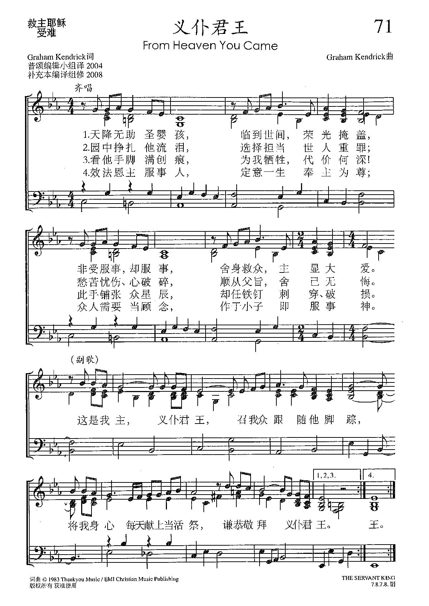

|
|
|
|
Verse 1 |
Verse 1 |
|

|
|
|
|
|

-
Graham Kendrick - The Servant King
(Glastonbury Abbey 1996)
-
The Servant King" by Maranatha Singers
-
君尊義僕
0955
From Heaven You Came
(THE
SERVANT KING)
Kendrick, Graham, 1950-
［詞，曲作者］


https://tidal.com/browse/album/35359391
https://hymnary.org/person/Kendrick_G
Graham Kendrick (born
2 August 1950) is a prolific English Christian singer,
songwriter and worship
leader. He is the son of Baptist pastor,
M. D. Kendrick and grew up in Laindon,
Essex and Putney.[1] He
now lives in Tunbridge
Wells and is a member of Holy Trinity with Christ Church, Tunbridge Wells.
He is a member of Ichthus
Christian Fellowship. Together with Roger
Forster, Gerald
Coates and Lynn Green, he was a founder of March
for Jesus.
Texts by Graham Kendrick (71)
Tunes by Graham Kendrick (59)
From Heaven You Came (THE SERVANT KING)
one
of the most prominent names in Contemporary Praise Music, is the author of
popular songs such as
- From Heaven You Came,
- Meekness and Majesty,
- Shine Jesus Shine, and
- Such Love,
- Pure as the Whitest Snow.
Kendrick is charismatic and promotes the
heretical “kingdom now” theology and Word faith doctrine. He is a member of the
Ichthus Christian Fellowship and welcomed the so-called Toronto Blessing. Graham
claims that he was “baptized with the Holy Spirit” in 1971 after attending a
charismatic meeting. He says, “It was later that night when I was cleaning my
teeth ready to go to bed that I was filled with the Holy Spirit! ... and I
remember lying at last in my bed, the fixed grin still on my face, praising and
thanking God, and gingerly trying out a new spiritual language that had
presented itself to my tongue with no regard at all for the objections thrown up
by my incredulous brain! ... That was a real watershed in my Christian
experience” (Nigel Smyth, “What Are We All Singing About?”
http://www.freedomministries.org.uk/ccm/nsmyth1.shtm
l).